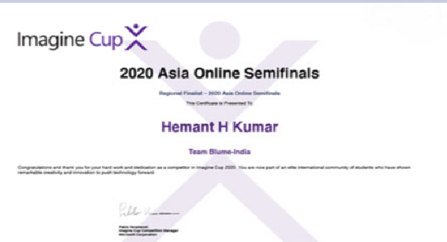

School of Computer Science and Engineering (SCOPE)
Student Clubs
The clubs here at VIT suits everyone’s enthusiasms and fits everyone on campus. VIT is enhanced with many such clubs. These clubs help students cultivate leadership and team-building skills. These clubs are responsible for the never-ending stream of liveliness and events that happen in our college. Name technical, artistic, research-oriented or public speaking, everything and everyone is satisfied here.
For Contact:
Assistant Director Students’ Welfare Office
# 121, Floor 1
Dr. M.G.R. Block
Vellore Institute of Technology (VIT)
Vellore-632 014
Phone: +91-416-2202034 / 2007
Fax: +91-416-2243092
E.Mail: events.sw@vit.ac.in
Technical 😉
- Codechef
- Innovator's Quest
- Robovitics
- E-Cell
Arts&Cultural 🎨
- Vit Animation
- BeatBoxing Club
- Comedy Club
- Muisic Club
Social OutReach 😊
- Rotaract Club
- NCC
- Fepsi
- Hearts
Health & Fitness ⚽
- Sports Club
- Cycling Club
- Board Games Club
- Trekking Club
Student Achievements

- 2nd Position at Code2Create, conducted by ACM VIT Student Chapter. Tried making UI UX from scratch for the first time. Plus point is we won ₹10,000 for our App, Wire.
- Mr. Jaivarsan (B.Tech. CSE with Specialization in Bioinformatics) has coauthored a paper titled “Bioconda: A sustainable and comprehensive software distribution for the life sciences” which was published in Nature Methods Journal. The journal has an impact factor of 26.919.
- Mr. Shubham Saraff (B.Tech. CSE with Specialization in Bioinformatics) Global Winner of IET-PATW , Winner of Ideas 2 Innovation Entrepreneurship Competition, Distinction Fryer and Pascal Math Contest, Youngest & Best Delegate.
- Students won the Mozilla Firefox Hackathon, a two day Hackathon focusing on App development.
- A team of students were selected in the top three amongst 107 entries in the Google Product Prodigy Event, an annual technical competition organized by Google.
- Students participated in Microsoft Imagine Cup under the team name of Exception Underflow and were placed amongst the top 5 teams in India in the innovation challenge.
- Mr.Darsh Patel (B.Tech. CSE with Specialization in Information Security) and Team were one of the 16 teams invited to Google's Banglore Headquarters, for it's Build for Digital India Program.
- Mr. Hemant H Kumar, (B.Tech. CSE), is a two-time Asia Regional Finalist at the Microsoft Imagine Cup. In 2020, he is as the first runner up at Asia level. His team developed a solution for tackling counterfeit drug proliferation in India using Blockchain and a simple, easy to use mobile application.